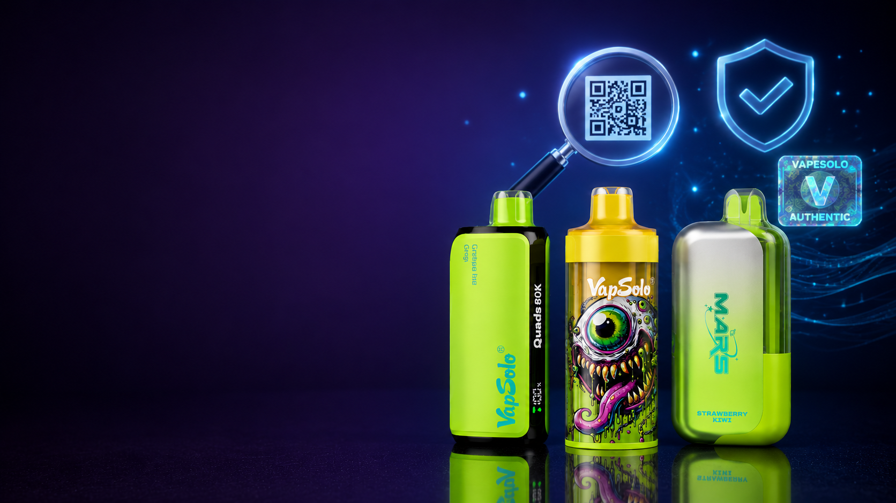

Caladas
Caladas¿Qué significa 80K puff en un vaper desechable?
Entiende puff, caladas y autonomía estimada antes de comparar modelos de alta duración.
LEER GUÍAAprende a comparar modelos VapeSolo y VapSolo por autonomía, sabores, nicotina y compra online responsable en España.
Artículos completos con información para adultos, enlaces a modelos relacionados y notas de uso responsable.
CaladasEntiende puff, caladas y autonomía estimada antes de comparar modelos de alta duración.
LEER GUÍA Comparativa
ComparativaCompara 12K, 20K, 40K y 80K según formato, autonomía y preferencias de uso.
LEER GUÍA Sabores
SaboresRevisa perfiles de sabor habituales y cómo confirmar disponibilidad actual.
LEER GUÍA Nicotina
NicotinaGuía responsable para revisar concentración, advertencias, formato y sabores.
LEER GUÍA Modelos
ModelosCompara formato compacto frente a alta autonomía sin promesas de duración exacta.
LEER GUÍA Compra online
Compra onlineConsejos para revisar fichas, enlaces y condiciones actuales antes de comprar.
LEER GUÍA
OriginalidadRevisa embalaje, modelo, ficha, advertencias y señales que pueden generar dudas antes de comprar.
LEER GUÍA Duración
DuraciónEntiende por qué las caladas son estimadas y qué factores cambian la duración real del dispositivo.
LEER GUÍA Sabores
SaboresCompara formatos con dos, tres o cuatro sabores y revisa las diferencias antes de elegir.
LEER GUÍARevisa modelos VapSolo, compara caladas y consulta fichas actualizadas antes de comprar.